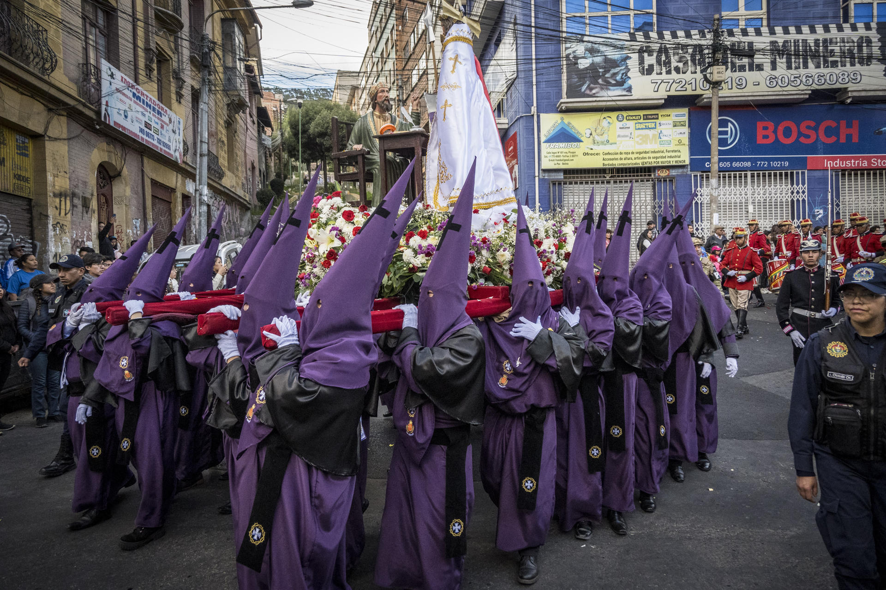

Semana Santa en Bolivia
La Semana Santa en Bolivia es una celebración profundamente arraigada en la cultura y la tradición religiosa del país. A continuación, se detallan algunas de las costumbres más significativas que se practican durante esta festividad.
Ayuno el Viernes Santo
El ayuno y la abstinencia en el consumo de alimentos por unas horas es una muestra de luto por la muerte de Jesús. Muchas familias optan por hacerlo hasta el mediodía como un gesto de penitencia.
Comer 12 platos
Tras el ayuno voluntario, la población suele comer 12 platos que representan a los 12 apóstoles. Incluye sopa de pan, locro de zapallo, arroz con leche, frutas y chicha de manzana.
No comer carne roja
Es común evitar las carnes rojas durante el Viernes Santo, pues se cree que representan el cuerpo de Cristo crucificado.
Compartir con familia y amigos
Muchas personas aprovechan esta festividad para descansar y compartir con sus seres queridos, incluso promoviendo el turismo interno.
Ayudar a una causa social
Esta época suele ser propicia para reflexionar sobre las necesidades de los más vulnerables y brindar algún tipo de ayuda solidaria.
